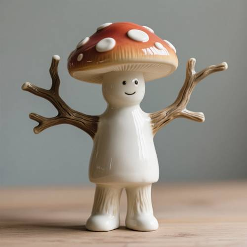
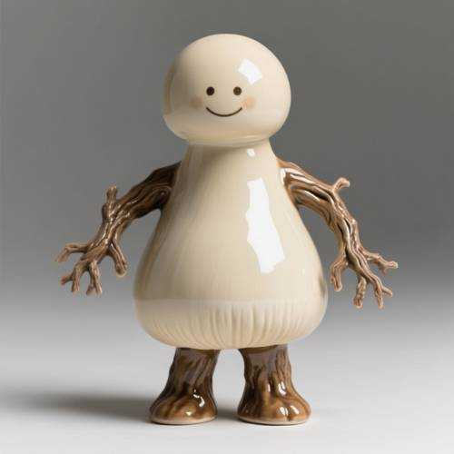

Grammar — Generated image: A ceramic mushroom man with arms like branches but no
Generated image: A ceramic mushroom man with arms like branches but no fungus cover on his head.

Direct — one call, no iteration

Continuum — Kimi K3 + Qwen-Image
Judge — Direct
FAILGrammar - Negation — The prompt specifies that the mushroom man should have 'no fungus cover on his head'. The image, however, clearly depicts the character with a large, red mushroom cap with white spots on its head. This is a fungus cover, directly contradicting the negative constraint in the prompt.
PASSCompound - Feature Matching — The image shows a figurine that appears to be made of ceramic, with a glossy finish. The figure is a mushroom man, having a humanoid body with a mushroom cap. Its arms are brown and shaped like tree branches, complete with smaller twig-like offshoots.
Judge — Continuum
PASSGrammar - Negation — The figure in the image has a smooth, spherical, off-white head. There is no texture, shape, or feature resembling a fungus cover or a mushroom cap on its head, fulfilling the negative constraint.
PASSCompound - Feature Matching — The image shows an anthropomorphic figure with a body shaped like a mushroom stalk and a glossy finish suggesting it is made of ceramic. The figure's arms are brown, textured, and shaped to look like tree branches, complete with smaller twig-like appendages for hands.
What the agent did
Thinking
The user wants me to generate an image of "A ceramic mushroom man with arms like branches but no fungus cover on his head." Let me parse this prompt: - A ceramic mushroom man - a humanoid figure made of ceramic, with mushroom characteristics - Arms like branches - his arms look like tree branches - No fungus cover on his head - meaning no mushroom cap on his head (the typical mushroom cap is absent) So this is a ceramic figurine/statue of a mushroom person, with branch-like arms, but his head lacks the mushroom cap. Perhaps a bald/bare head, ceramic. Let me generate this with qwen-image as per the policy.
Model
I'll generate this image of a ceramic mushroom man with branch-like arms and a bare head (no mushroom cap).
Step 1 — `generate_image`
{
"prompt": "A ceramic figurine of a mushroom man standing upright, glossy glazed pottery surface in cream and earthy tones. His body is shaped like a plump mushroom stem with a rounded torso and short legs. His arms are gnarled, twisted tree branches extending outward with small twig-like fingers. His head is completely bare and smooth \u2014 a round bald ceramic head with NO mushroom cap on top, just a plain domed skull. He has a simple friendly face with small painted eyes and a gentle smile. Studio product photography, soft diffused lighting, neutral gray background, subtle reflections on the glazed ceramic surface.",
"model": "qwen-image"
}
Result img_0
Thinking
Let me evaluate the generated image against the prompt: 1. **Ceramic mushroom man** ✓ — glossy glazed ceramic figurine, mushroom-stem-like plump body. Looks ceramic clearly. 2. **Arms like branches** ✓ — gnarled brown branch-like arms with twig fingers. Very well done. 3. **No fungus cover on his head** ✓ — the head is a bare, smooth, round ceramic dome with no mushroom cap. All elements of the prompt are present: - Ceramic material: yes, glossy glaze visible - Mushroom man: the body has a mushroom-stem shape, and there are subtle gill-like ridges at the bottom of the torso suggesting mushroom gills - Branch arms: yes, clearly branch-like - No cap on head: yes, head is bare and smooth The image looks good. The composition is clean, the subject is centered and fully visible. Face is cute and simple. One could argue whether it reads as a "mushroom man" without the cap, but the body shape is mushroom-stem-like and the prompt explicitly says NO fungus cover on the head, so this is correct. I think this is a good result. Let me mark it as best and stop. The image satisfies all requirements: - ✓ Ceramic - ✓ Mushroom man (stem-shaped body) - ✓ Branch-like arms - ✓ No fungus cover/cap on head I'll mark it best and conclude.
Model
The generated image matches the prompt well. Let me verify each element: 1. **Ceramic mushroom man** ✓ — glossy glazed pottery figurine with a plump mushroom-stem-shaped body, subtle gill-like ridges at the torso's base 2. **Arms like branches** ✓ — gnarled brown branch arms with twig-like fingers, nicely textured bark glaze 3. **No fungus cover on his head** ✓ — the head is a completely bare, smooth round ceramic dome with no mushroom cap whatsoever All requested elements are present and correct, the composition is clean, and the subject is fully in frame. This is a good result.
Step 2 — `mark_best`
{
"image": "img_0",
"reason": "All prompt elements satisfied: glossy ceramic mushroom-stem-bodied figure, gnarled branch-like arms with twig fingers, and a completely bare smooth ceramic head with no mushroom cap. Clean studio presentation, subject fully in frame."
}
Thinking
The image is good and marked as best. All elements of the prompt are present. I'll stop here as per the "good enough is a stop condition" rule.
Model
The image is complete and matches the prompt: - **Ceramic**: The figure has a glossy glazed pottery surface with visible studio reflections, in cream and earthy brown tones. - **Mushroom man**: The plump stem-shaped body with subtle gill-like ridges at its base reads as a mushroom figure. - **Arms like branches**: Both arms are gnarled, twisting tree branches ending in delicate twig fingers, with a bark-textured brown glaze. - **No fungus cover on his head**: The head is a bare, smooth, rounded ceramic dome — no mushroom cap at all, exactly as requested. The first generation captured everything cleanly, so no edits were needed. The image has been marked as the final result.